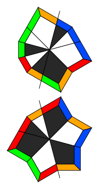

Alg-Based CSP
Algorithm-Based Cubeshape Parity
I'm going to assume you already learned my specific version of CSP,
as the solutions here will be based on that.
If you haven't learned (or at least read through) Easy CSP, you may get confused and some algorithms may not seem to work.
I assure you, everything here works with my tracing positions.
Same as before, these solutions are written as reductions to 3-slicers (which you should already know optimally), and if a case is in an orange box you will have to +1 extra to your parity count before determining your solution.
If you haven't learned (or at least read through) Easy CSP, you may get confused and some algorithms may not seem to work.
I assure you, everything here works with my tracing positions.
Same as before, these solutions are written as reductions to 3-slicers (which you should already know optimally), and if a case is in an orange box you will have to +1 extra to your parity count before determining your solution.
Left 4-2/Pair
Odd:

/ 4,0
Even:
/ -2,0

Right 4-2/Pair
Odd:
/ -4,0
Even:
/ 2,0